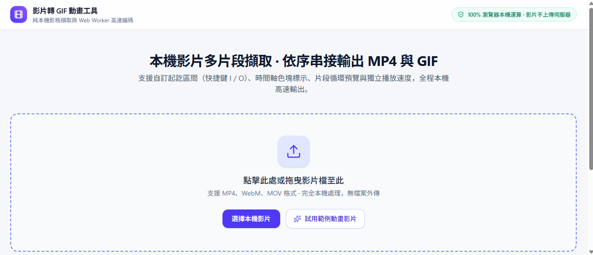
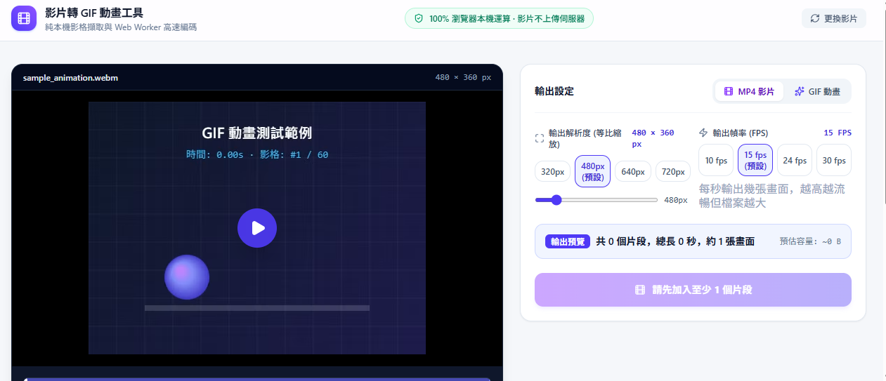

為什麼做
手邊有影片檔需要壓縮，又想把片段做成 GIF，所以用 Google AI Studio 做了這個小工具：從影片裡挑出想要的片段，輸出成 GIF 動畫或 MP4。
功能
- 從本機影片選取多段片段範圍
- 可輸出 GIF 動畫，也能輸出 MP4
- 純前端，在瀏覽器本機處理，影片不需要上傳到任何伺服器
開發方式
用 Google AI Studio 的 Build 模式開發，再透過 GitHub 同步發佈，並以 GitHub Pages 提供網頁版。程式碼公開，歡迎使用或修改。

